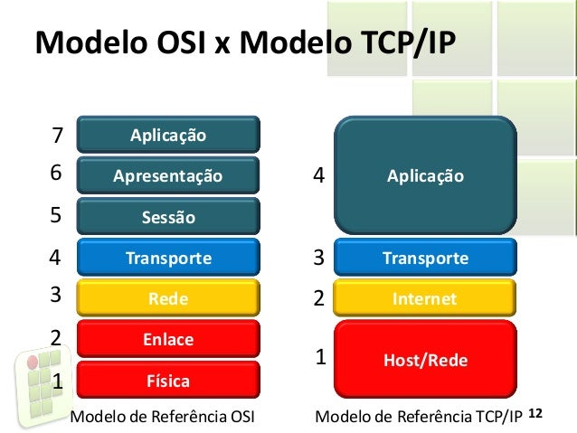

Bem-vindo ao site sobre o Modelo OSI aplicado ao TCP/IP.
Aqui você encontrará informações valiosas sobre a aplicação do Modelo de Referência OSI (Open Systems Interconnection) no contexto do protocolo TCP/IP, que é amplamente utilizado para a comunicação em redes de computadores, incluindo a internet. O Modelo OSI é um conjunto de diretrizes que descreve as diferentes camadas envolvidas na comunicação de rede. Ele divide o processo de comunicação em sete camadas distintas, cada uma com suas funções específicas. Exploraremos essas camadas e entenderemos como elas se relacionam com o TCP/IP. Por sua vez, o TCP/IP é um conjunto de protocolos que formam a base da comunicação de rede na internet. Ele é composto por quatro camadas principais: Camada de Aplicação, Camada de Transporte, Camada de Rede e Camada de Enlace de Dados. Neste site, exploraremos cada uma dessas camadas em detalhes. Você aprenderá sobre as funções de cada camada, os protocolos associados e exemplos práticos de sua aplicação. Vamos analisar como essas camadas trabalham em conjunto para garantir uma comunicação eficiente e confiável em uma rede.
